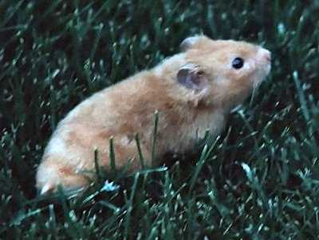

Rodents
The largest family of mammals is Rodentia, or the rodents. Rodent means gnawing animal, and these animals are so named because of their large incisor teeth
and the way they eat. The two long pairs of incisors are used like chisels
to gnaw on hard foods like nuts and wood. Their incisors grow continuously
and must be worn down by gnawing.
There are three major types of rodent: squirrels, mice,
and porcupines.
- Squirrel-like rodents, such as the squirrel and gopher, have long, bushy
tails and large eyes. They can live in trees or underground in tunnels. They
might hibernate during the winter.
- Mouse-like rodents include the mouse, the rat, and the hamster. Some mouse-like
rodents have long, thin tails and short legs. Others have short tails. They
live mostly above ground, although some burrow underground. They might also
hibernate during the winter. Rats and mice often live near humans, sometimes
even inside humans' buildings, enabling them to live off human food and garbage.
- Porcupines differ from other rodents, and other mammals as well, because
they have long, sharp quills on their backs for protection.
